Youth for Peace Model United Nations
With the Youth Affairs Agency of Uzbekistan · Tashkent
- Role
- Organizer; International Participants Coordinator
- Organization
- Youth Affairs Agency; coalition of nearly all MUNs in Uzbekistan
- Dates
- 17–18 Aug 2026


Summary
- Role
- Organizer; international participants coordinator, 17–18 Aug 2026
- With
- The Youth Affairs Agency and a coalition of almost every MUN club in Uzbekistan
- What I did
- Helped build the organizing team from almost every MUN club in Uzbekistan.
- Presented the idea to Alisher Sa’dullayev, director of the Youth Affairs Agency.
- Managed international guests’ flights, meals and plans in Tashkent.
- Result
- 300 delegates, chosen competitively and fully funded, at one of the largest Model UN conferences in Central Asia. We also hosted the presentation of the World Youth Movement for Peace. The best delegates will represent Uzbekistan at the ECOSOC Youth Forum in New York.
- What I learned
- Guests remember the opening ceremony, but the conference depends on flights, meals and last-minute tickets.
Youth for Peace (Y4P) MUN brought 300 fully funded delegates together for two days in August 2026, one of the largest Model UN conferences in Central Asia. I helped organize it and coordinated every international participant who came.
The story
When I founded JMUN, I wanted it to grow into something much bigger. After ESDALMUN’25, I brought together a team from almost every MUN club in Uzbekistan and presented the idea to Alisher Sa’dullayev, director of the Youth Affairs Agency. He supported it fully. On 17–18 August 2026, 300 delegates took part for free. Alongside the opening ceremony, we hosted the presentation of the World Youth Movement for Peace, the President’s initiative, and invited young leaders from around the world. My job was the international guests: their flights, meals and plans in Tashkent. We bought the last airline tickets at the very last minute.
From JMUN to Youth for Peace MUN
The goal
When I founded JMUN, I hoped it would grow into a much larger conference one day.
At ESDALMUN’25, one of my goals was to agree with its organizers to help us build a much larger MUN at home. Then I brought together a team from almost every MUN in Uzbekistan to organize it. After that, I had the privilege of presenting the idea to the director of the Youth Affairs Agency, Alisher Sa’dullayev. He supported it, and we organized it together with the Agency.


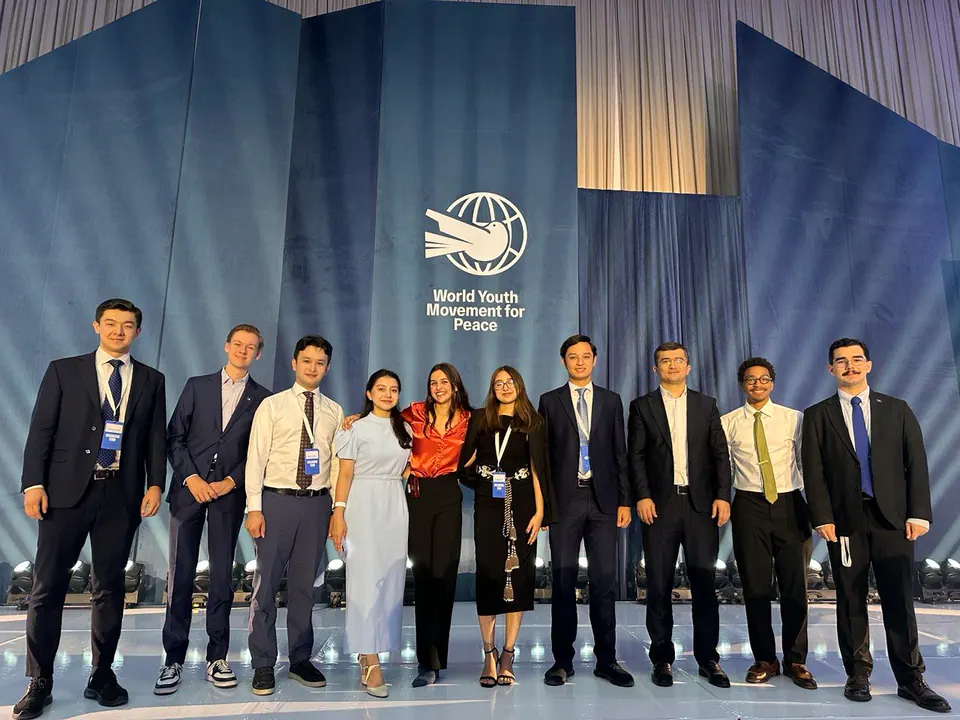
World Youth Movement for Peace
Bringing the world’s young leaders to Uzbekistan
Alongside the opening ceremony of Y4P MUN, we held the presentation of our president’s initiative, the World Youth Movement for Peace, and invited the world’s young leaders to Uzbekistan. We formed a team, and I was responsible for the international participants. I talked with them and managed everything for them: their plans in Tashkent, their flights and their meals. That is how we brought young leaders from around the world to one place: Y4P MUN.

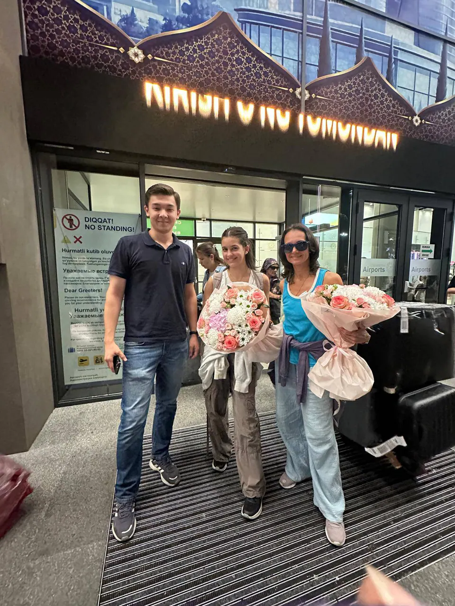

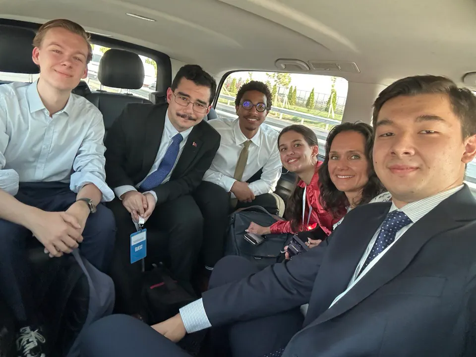

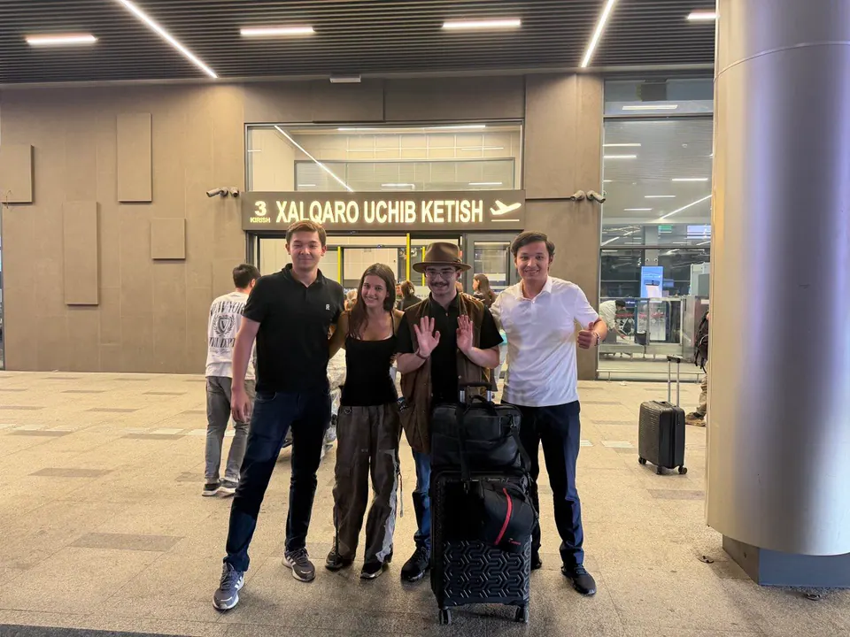
 Play video: World Youth Movement for Peace & Youth for Peace MUN: Opening Ceremony
Play video: World Youth Movement for Peace & Youth for Peace MUN: Opening Ceremony
 Play video: World Youth Movement for Peace & Youth for Peace MUN: Opening Ceremony, part 2
Play video: World Youth Movement for Peace & Youth for Peace MUN: Opening Ceremony, part 2
17–18 August 2026
Two days, 300 delegates
The MUN was fully funded for participants. In total, 300 delegates were chosen through a competitive selection, and their two days at the conference were fully funded. The best delegates of Y4P MUN will represent Uzbekistan at the ECOSOC Youth Forum in New York.

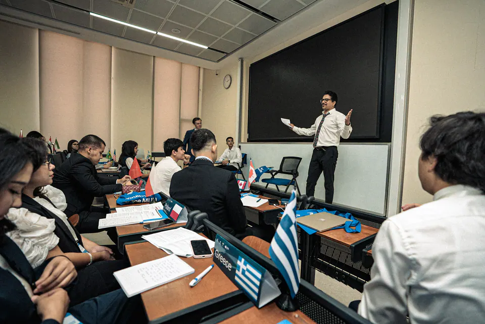

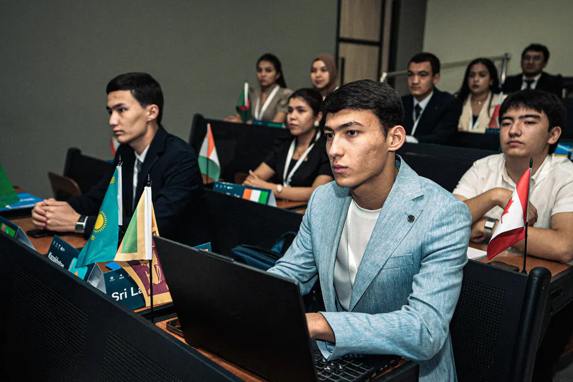
It was the goal I had set when I founded JMUN.
Gallery
More moments

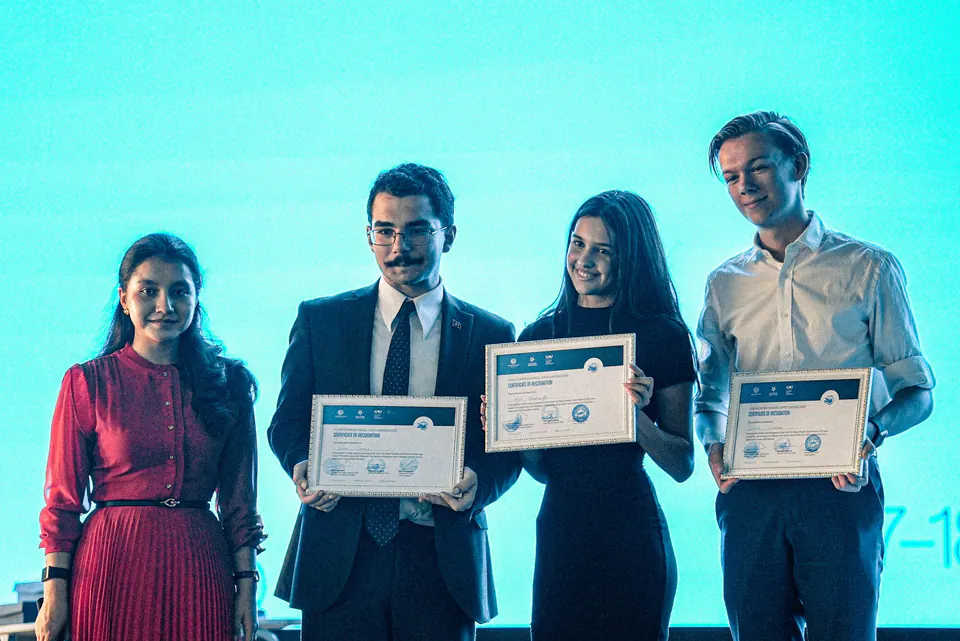

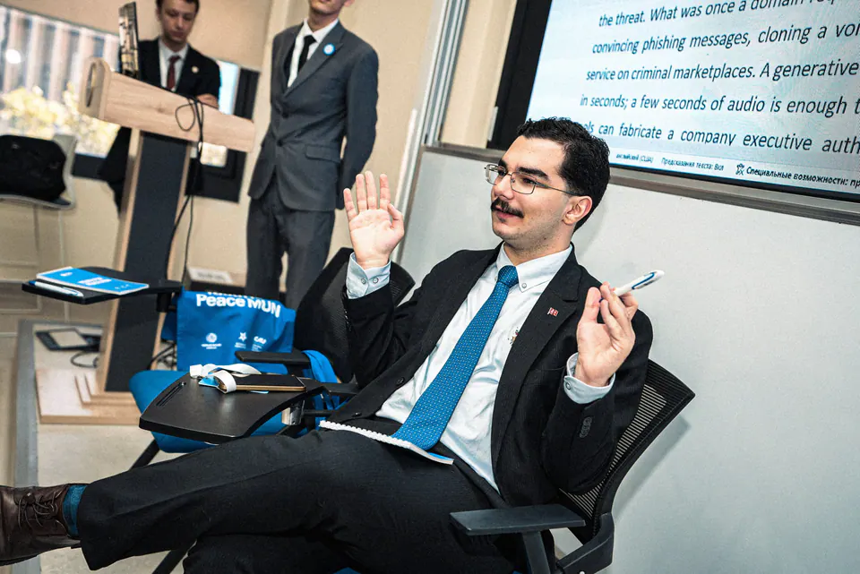

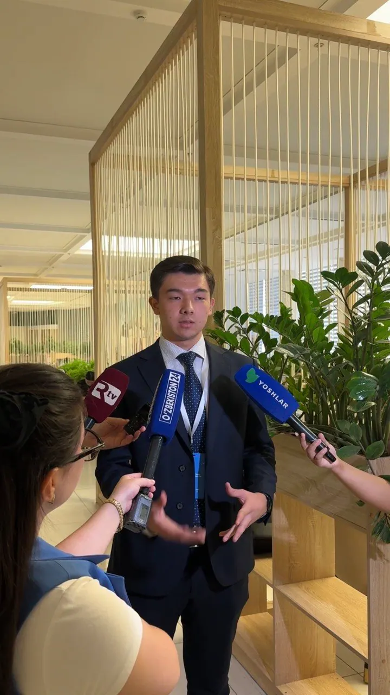

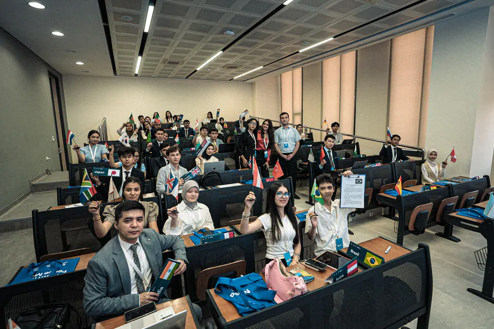

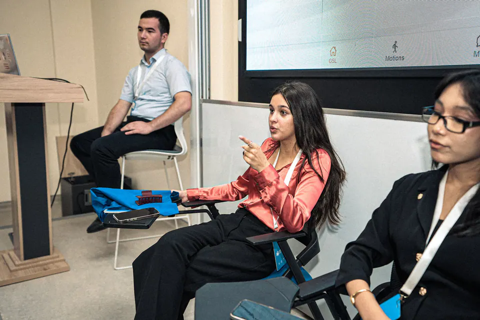

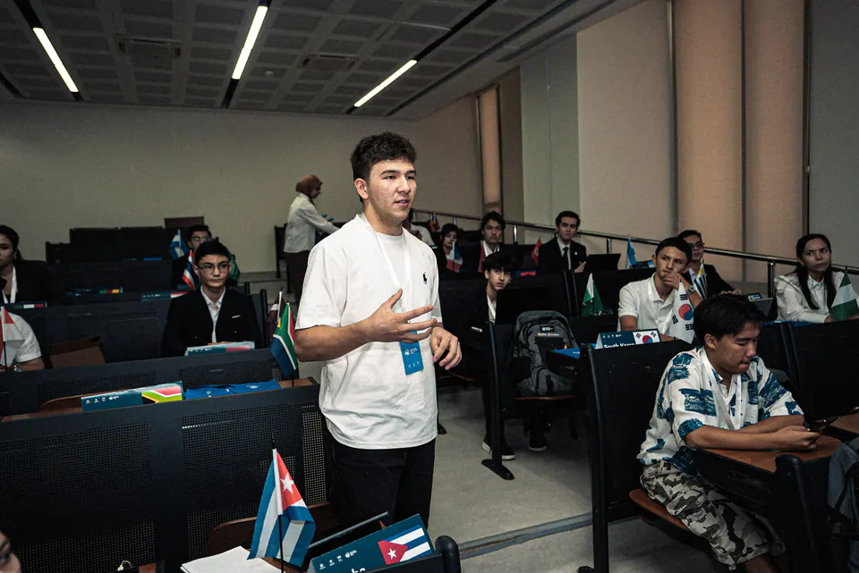

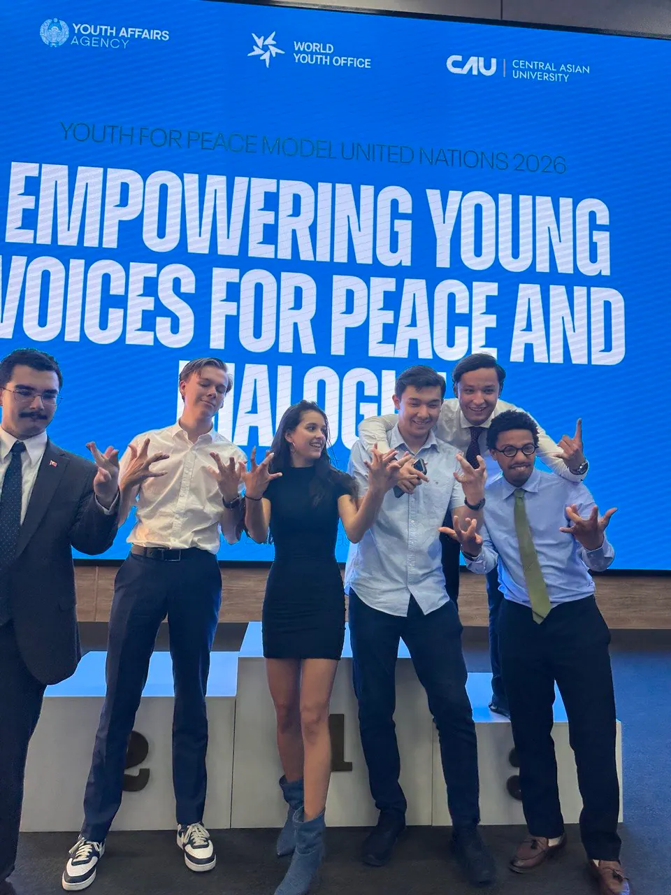